Examples#
This gallery walks through every public feature of
engineeringkit.materials, one breakthrough per script: X-ray
diffraction, diffusion, transformation kinetics, elastic constants and
thermal stress, hardness, the yield criteria, composites from the
rules of mixtures to laminates, fatigue from Goodman to Neuber, fracture
from Griffith to Paris and Weibull, creep, and the dislocation theory of
plasticity.
Units, assumptions and numerical validation
gives the physical validity limits. Each script is self-contained and can be
run directly with python examples/materials/<section>/<script>.py.
Sections#
crystals – the Braggs’ law of X-ray diffraction.
diffusion – Fick’s laws and carburizing.
phases – Avrami’s transformation kinetics and the lever rule.
elasticity – Young’s modulus, Duhamel’s thermal stress and Lamé’s constants.
hardness – Brinell’s hardness test.
yield – Tresca’s maximum-shear criterion and von Mises’s distortion energy.
composites – the Voigt and Reuss bounds, the Halpin-Tsai equations and classical laminate theory.
fatigue – Goodman’s diagram, Basquin’s S-N law, Palmgren-Miner damage, Coffin-Manson low-cycle fatigue and Neuber’s rule.
fracture – Griffith’s energy balance, Irwin’s stress intensity factor, Paris’s law and Weibull’s brittle strength.
creep – Norton’s power-law creep and the Larson-Miller parameter.
plasticity – dislocations, the Ramberg-Osgood curve and Hall-Petch strengthening.
Composites#
Rules of mixtures, the Halpin-Tsai equations and classical laminate theory.
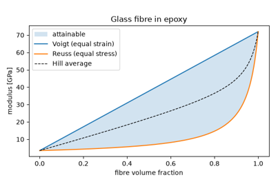
Voigt and Reuss: bounds on a composite’s stiffness (1889-1929)
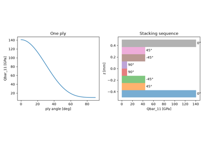
Reissner and Stavsky: classical laminate theory (1961)
Creep#
Steady creep and time-temperature parameters for rupture.
Crystals#
Unit cells, packing, theoretical density and X-ray diffraction.
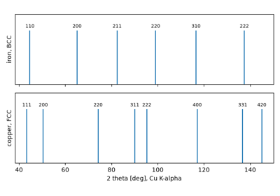
The Braggs’ law of X-ray diffraction (1913)
Diffusion#
Fick’s laws, the Arrhenius diffusivity and case carburizing.
Elasticity#
Young’s modulus, thermal stress and the isotropic elastic constants.
Fatigue#
Stress-life, mean stress, cumulative damage, strain-life and notches.
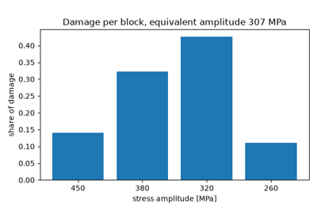
Palmgren and Miner’s cumulative damage (1945)
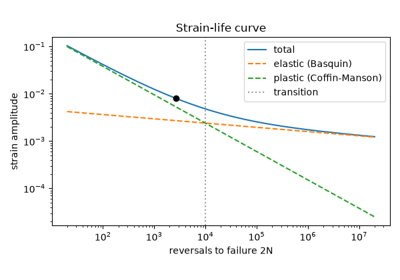
Coffin and Manson: low-cycle fatigue (1954)
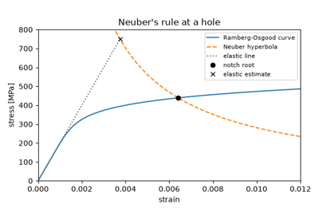
Neuber’s rule for notches that yield (1961)
Fracture#
Brittle fracture, the stress intensity factor, fatigue crack growth and the statistics of brittle strength.
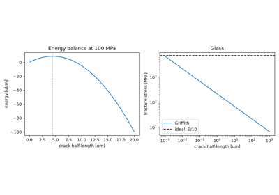
Griffith’s theory of brittle fracture (1920)
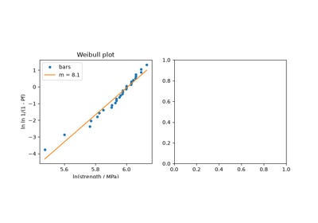
Weibull’s statistical strength of brittle materials (1939)
Hardness#
Indentation hardness and its link to tensile strength.
Phases#
The lever rule on a binary phase diagram and transformation kinetics.
Plasticity#
Dislocations, strain hardening and grain-size strengthening.
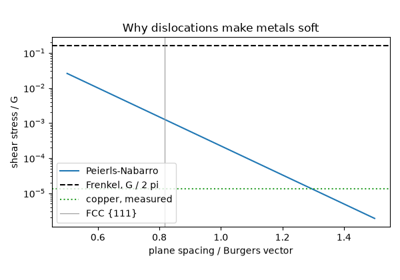
Taylor, Orowan and Polanyi: dislocations (1934)
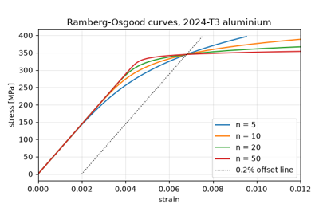
Ramberg and Osgood’s stress-strain curve (1943)
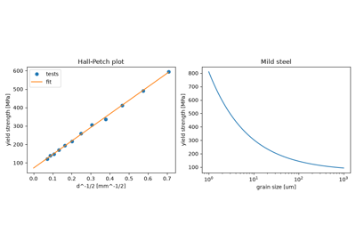
Hall and Petch: grain-size strengthening (1951-1953)
Yield#
Multiaxial yield criteria for ductile metals.
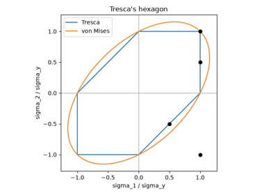
Tresca’s maximum-shear yield criterion (1864)